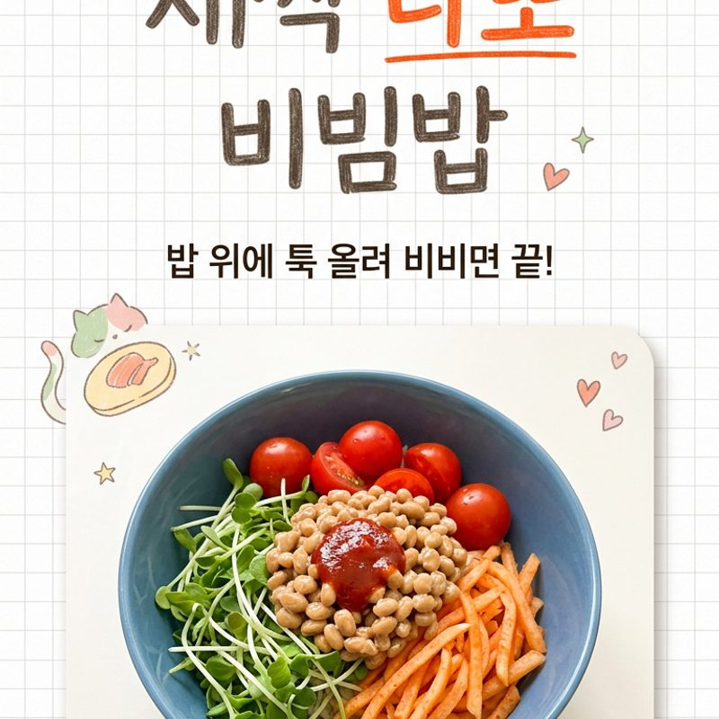

새싹 나또 비빔밥
불 없이 5분,
밥 위에 올려 비비기만 하면 끝.
생비밀재료 한 팩으로 장 편하고 포만감까지 잡는
다이어트 비빔밥이에요.

쿠팡 파트너스 활동의 일환으로, 수수료를 제공받습니다.
🔒 비밀 재료
이 레시피의 핵심 재료!
궁금하다면 아래 버튼을 눌러보세요.
함께 쓰면 좋은 재료 ↓
추가 재료 보러가기쿠팡 파트너스 활동의 일환으로, 수수료를 제공받습니다.
👨🍳 만드는 방법
재료
밥 1공기, 새싹 200g, 방울토마토 4개, 비밀재료 100g, 무 150g
🥄 양념 황금 배합
- 고추장 3큰술
- 매실청 1큰술
- 다진마늘 1/2작은술
- 고춧가루 2작은술
- 식초 1작은술
- 소금 1/2작은술
만드는 법
- 1. 재료 손질
새싹은 흐르는 물에 깨끗이 씻어 물기를 빼고,
방울토마토는 반으로 자른다. - 2. 무생채 만들기
무를 채썰어 소금에 살짝 절인 뒤 물기를 꼭 짜고,
고춧가루·다진마늘·식초로 조물조물 무친다. - 3. 양념장 섞기
고추장·다진마늘·매실청을 섞어
비빔 양념장을 만든다. - 4. 담기
그릇에 밥을 담고 새싹·무생채·방울토마토·생비밀재료를
색깔별로 올린다. - 5. 비비기
양념장을 얹고 비밀재료 실이 끝까지 늘어나게
충분히 저어가며 슥슥 비비면 완성.
🍜 요즘요리의 한 줄 팁
핵심은 생비밀재료 — 실이 잘 늘어날 때까지 저어야 감칠맛이 확 올라와요.